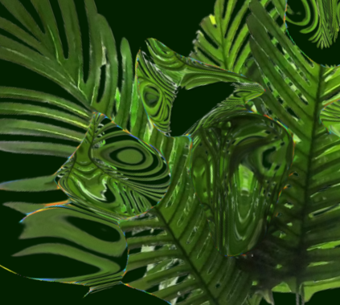
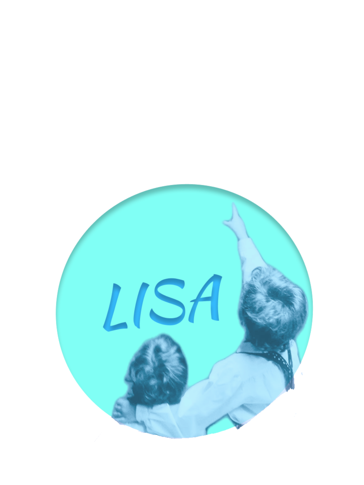
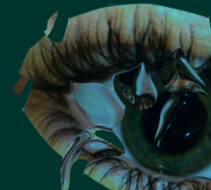
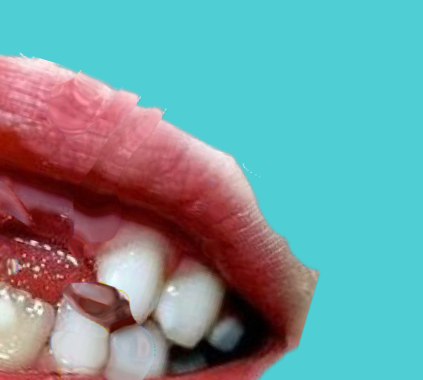
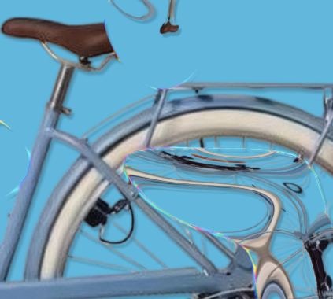
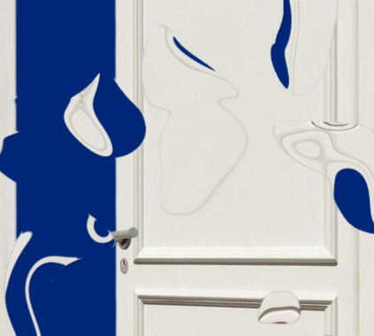

01. Save Me
Joan Thiele · 2016
I listened to this a lot at thirteen. Things felt overwhelming at home and at school, and I kept coming back to the lines about pretending and wanting to get away.
I chose these five songs because each takes me back to a different moment of growing up. I heard them while wanting to leave, starting over in another country, finding words for who I was, and feeling the pressure to grow up. The last song is about making peace with myself. I designed the covers as a sequence from dark green to deep blue.


Joan Thiele · 2016
I listened to this a lot at thirteen. Things felt overwhelming at home and at school, and I kept coming back to the lines about pretending and wanting to get away.

Au/Ra · 2018
At fourteen, I moved from China to the U.S. on my own for high school. Spotify Radio played this song while I was in class, and I loved it right away. I remember feeling empty back then. Only later did I realize how much fear and unease I had shut out.

Angèle · 2018
I heard this by chance in April 2022. It sounded romantic and a little sad. When I read the lyrics, I recognized feelings I’d understood as friendship for years. I felt at ease once I had words for them. A crush can feel uncertain even when you feel sure of who you are.

Men I Trust · 2021
I found this song in 2023, when I was eighteen. It sounded quiet and a little faded, like an old photo. Turning eighteen made me feel like I was supposed to grow up overnight. The song reminded me how much of childhood you still carry with you.

Billie Eilish · 2024
I listened to this song in 2026. It tells the story of an unhealthy relationship, and I kept thinking about how honestly she examines herself in it. For me, it’s a song about making peace with myself.